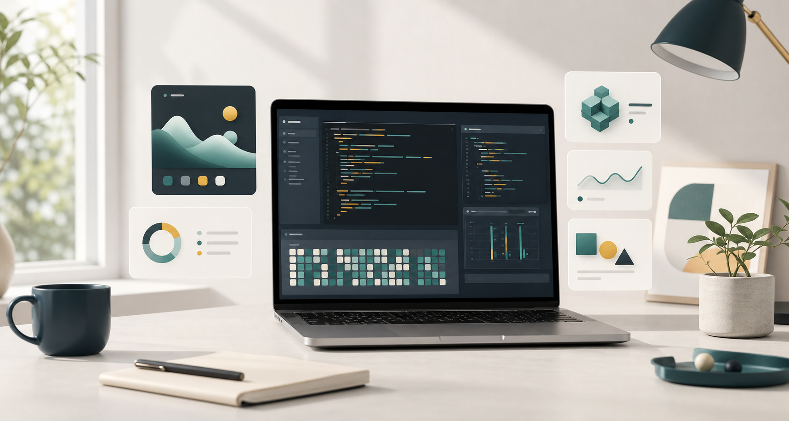

소개
사용자 흐름을 먼저 이해하고, 필요한 기능을 명확한 화면과 안정적인 코드로 옮깁니다. 작은 자동화부터 서비스 화면 구현까지, 반복되는 작업을 줄이고 유지보수 가능한 결과를 만드는 데 관심이 있습니다.
Developer Portfolio
<YOUR_NAME>은 웹 애플리케이션의 구조, 인터페이스, 배포 흐름을 꾸준히 다듬는 개발자입니다. 이 페이지는 GitHub Pages에서 바로 공개할 수 있는 포트폴리오 초안입니다.

About
사용자 흐름을 먼저 이해하고, 필요한 기능을 명확한 화면과 안정적인 코드로 옮깁니다. 작은 자동화부터 서비스 화면 구현까지, 반복되는 작업을 줄이고 유지보수 가능한 결과를 만드는 데 관심이 있습니다.
요구사항을 문서화하고, 빠르게 동작하는 버전을 만든 뒤, 피드백을 기준으로 개선합니다. 기능 구현만큼 배포, 접근성, 성능, 협업 가능한 코드 스타일을 중요하게 봅니다.
Skills
Projects
할 일, 메모, 일정 데이터를 한 화면에서 확인하는 반응형 대시보드 샘플입니다.
매일 작성한 학습 로그를 주제별로 묶고, 회고 문서 초안을 생성하는 도구입니다.
정적 파일만으로 빠르게 배포할 수 있는 개발자 소개 페이지입니다.
Timeline
프로젝트와 학습 기록을 공개 가능한 형태로 정리하고 배포 흐름을 만들었습니다.
프론트엔드 화면 구성, API 연동, 데이터 흐름을 프로젝트 단위로 연습했습니다.
Git, JavaScript, 문서화, 반복 작업 자동화의 기본기를 쌓았습니다.
Contact